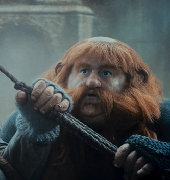
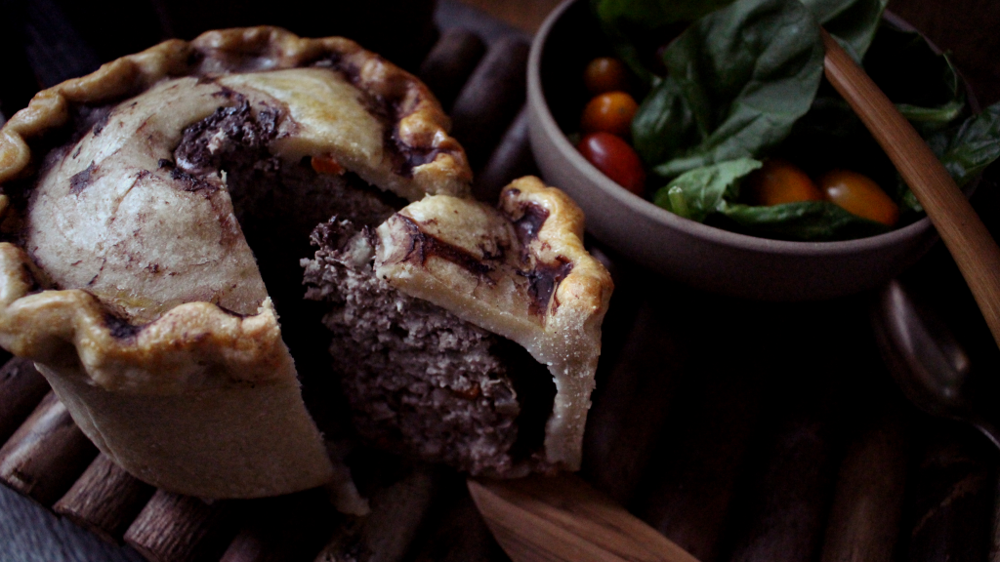
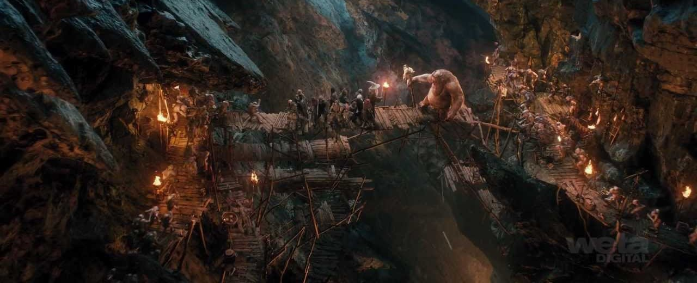
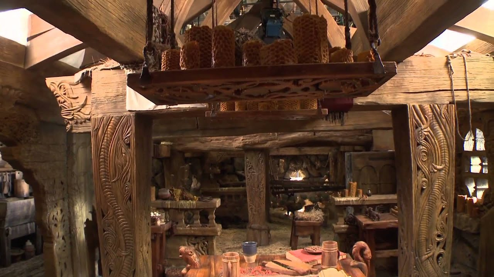
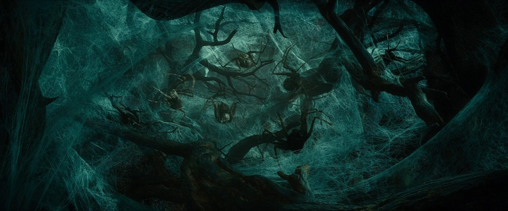

I don’t get it. I just woke up in the middle of Mirkwood, dripping with a dark liquid. After the crew got up and started walking, I pinched myself, hoping that I would wake from a horrible dream—nothing happened!


The rest of the crew told me I’ve been looking “nice and petite lately.” Not sure what that’s supposed to mean…starvation has taken a toll on all of us. Oh, the things I would do to have a nice pork pie and escape this wretched goblin cave.

Our thief complains despite being carried on my back! I, the fattest of the crew, was forced to carry Bilbo while running from goblins. Sometimes I ask myself why I came along on this adventure…

Food and rest at last! The honey at Beorn’s house was a refreshing contrast to the scraps from that troll cave. If only I could stay here forever…

Coming along on this journey has finally enabled me to realize the drawbacks of being fat. Today, in an act of desperation, we tried to approach a band of wood elves in the forest, having a splendid feast. The lights went out with a “whoosh,” and we were left in total darkness! Afterward, these great big spiders picked us out one by one, bundling us up and pinching us to make us taste more tender. Every last spider approached me, eyeing me with a disgusting expression of hunger. I can only imagine what would have happened if Bilbo hadn’t been there to save us again.